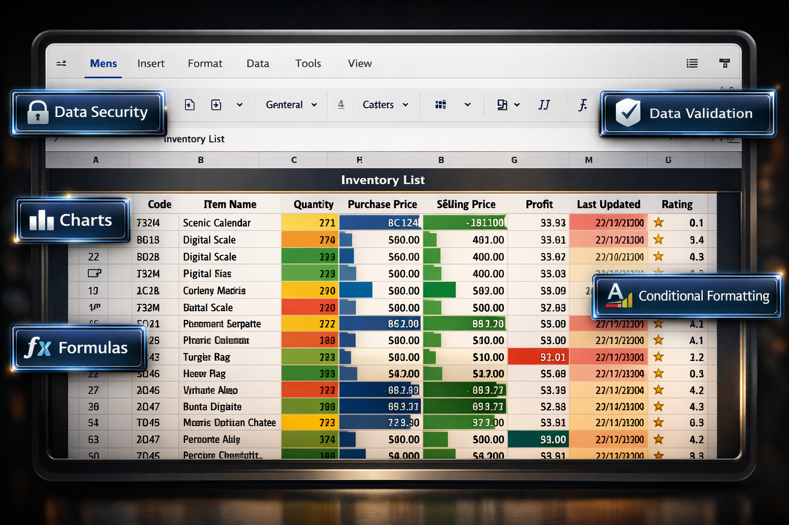
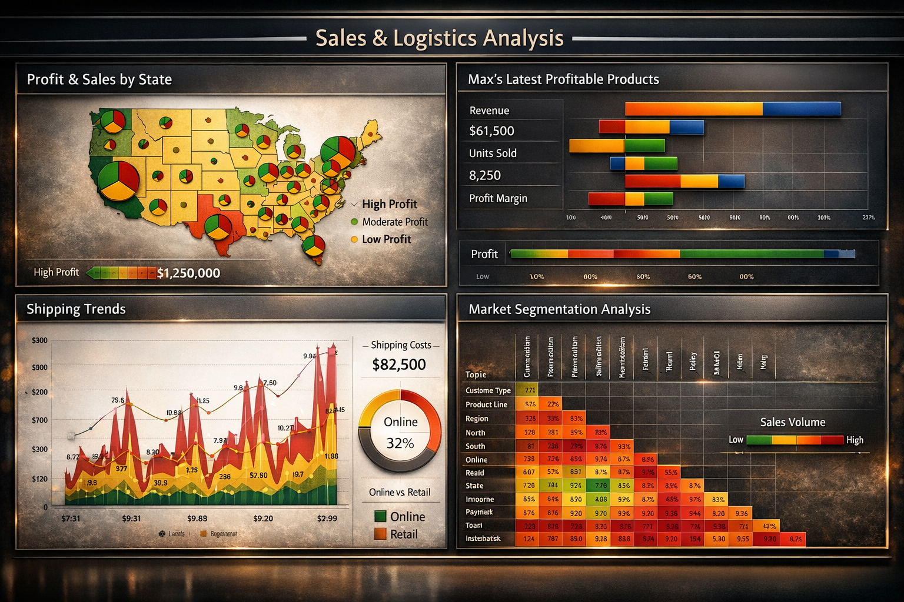
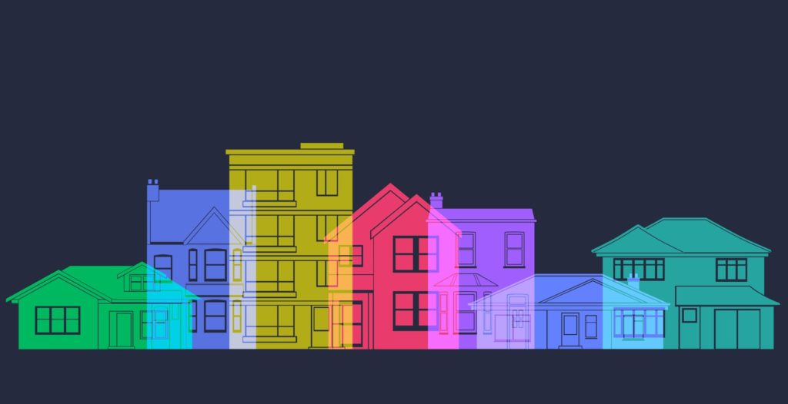

Spreadsheet Analysis
Analysis and visualisations of various datasets.

An Operations Specialist with experiences across international organisations focusing on complex operations, forecasting and visualization.
I support programme delivery through data management, KPI tracking, reporting, compliance and operational coordination.Analysis and visualisations of various datasets.


Analysis and visualisations of various datasets in Power BI.

Analysis and visualisations of various datasets in Tableau.
Data exploration showing code writing and analysis of COVID-19 death data until March 2022 in SQL Server.

Cleaning of housing data on SQL. Actions include: new colums creation, spliting information into columns, deletion of unwanted or unused column and writing code for simple functions.

Data retrieval and calculation from a spreadsheet.